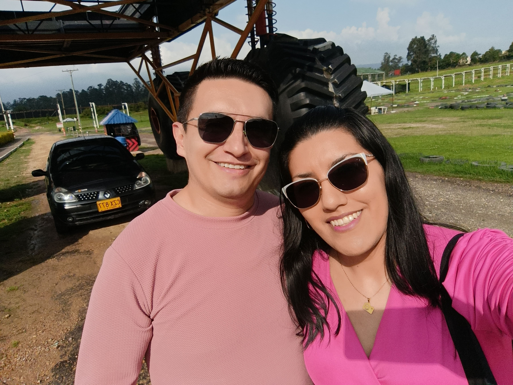

Ingenieros de sistemas
Compartimos la curiosidad, los retos y la satisfacción de construir soluciones. Pero nuestro proyecto más valioso siempre ha sido esta vida juntos.
SOLO PARA TI · 30.11.2026
Diez años de nosotros, guardados en una carta.
30 NOVIEMBRE 2016 — 30 NOVIEMBRE 2026
Si pudiera volver al día en que nos conocimos, volvería a elegir el mismo camino. Porque ese camino me llevó a ti.

Aquí va nuestra foto favorita ♡CAPÍTULO I
Hace diez años comenzó una historia que ninguno de los dos podía imaginar por completo. Llegaron las primeras conversaciones, las sonrisas, las decisiones compartidas y la certeza de que caminar juntos hacía más bonito el mundo.
Nos conocimos y, sin saberlo, empezamos a escribir nuestra historia favorita.
Entre sueños, estudios, retos, viajes, familia y nuevas oportunidades, construimos un equipo.
Y aunque hemos cambiado tanto, hay algo que permanece: mis ganas de seguir contigo.
CAPÍTULO II
Cada fotografía guarda una versión de nosotros que quiero abrazar para siempre.
CAPÍTULO III
Compartimos la curiosidad, los retos y la satisfacción de construir soluciones. Pero nuestro proyecto más valioso siempre ha sido esta vida juntos.
Entre metas académicas y profesionales, aprendimos que el mejor resultado no se mide en cifras, sino en todo lo que hemos logrado apoyándonos.
Gracias por ayudarme a cuidar lo que más amamos, por estar presentes y por enseñarme que el amor también se demuestra acompañando a los nuestros.
LA BANDA SONORA DE NUESTRA HISTORIA
Andrés Cepeda
Hay canciones que suenan bonito. Y hay canciones que, desde que existen en nuestra historia, siempre me llevan a ti.
Escuchar en YouTube ↗CAPÍTULO IV · UNA CARTA PARA TI
Mi esposo, mi lokito:
Hoy miro hacia atrás y me conmueve pensar en todo lo que hemos vivido. Diez años parecen mucho tiempo, pero contigo también se sienten como el comienzo de algo inmenso.
Gracias por cada abrazo que me dio calma, por cada palabra que me devolvió la fuerza y por creer en mí incluso en esos momentos en los que yo dudaba. Gracias por tu paciencia, tu compañía, tus enseñanzas y por todas las formas, grandes y pequeñas, en las que me has demostrado tu amor.
Gracias por crecer conmigo. Por compartir sueños, trasnochos, estudios y logros. Por acompañarme a convertir los desafíos en aprendizajes y por recordarme que no tengo que recorrer la vida a solas. Hemos sido estudiantes, profesionales, compañeros de aventuras y apoyo para nuestras familias. Pero, por encima de todo, hemos sido un equipo.
También agradezco los días difíciles, porque nos enseñaron a escucharnos, a comprendernos mejor y a elegirnos con más conciencia. No somos las mismas personas que se conocieron en 2016: hemos cambiado, aprendido y madurado. Y qué privilegio poder decir que una parte tan importante de ese crecimiento la viví a tu lado.
Estoy profundamente orgullosa de quienes somos como pareja. No solo de nuestros títulos o de las metas que hemos alcanzado, sino de la manera en que hemos aprendido a cuidarnos, a apoyarnos y a estar presentes para nuestras familias. Me llena de orgullo mirar lo que hemos construido juntos y reconocer en nosotros un amor que madura, que aprende y que sigue soñando.
Me emociona pensar en todo lo bonito que nos espera: los lugares que aún no conocemos, los proyectos que todavía imaginamos, las alegrías que vamos a compartir y las pequeñas cosas de cada día que harán de nuestra vida algo extraordinario. Quiero seguir creciendo contigo, admirándote y celebrando cada nueva versión de nosotros. Estos diez años no son el final de una meta: son el comienzo de tantas cosas hermosas que todavía tenemos por vivir.
No sé exactamente qué nos traerán los próximos años. Sí sé que quiero seguir celebrando tus alegrías, sosteniendo tu mano en los momentos inciertos y encontrando contigo motivos para sonreír en los días más sencillos.
Si la vida me preguntara otra vez con quién quiero compartir mis sueños, mis viajes, mis proyectos y mi hogar, mi respuesta seguiría siendo tú.
Feliz aniversario, mi esposo. Mi lokito, gracias por ser mi compañero de vida. Gracias por estos diez años. Gracias por ser tú. Y gracias por permitirme ser yo a tu lado.
Con todo mi amor,
K ♡ J
LO QUE VIENE
Más viajes. Más aprendizajes. Más domingos en familia. Más metas alcanzadas. Más abrazos sin motivo. Y muchos años más para decirte: qué fortuna haberte encontrado.
NUESTRO LENGUAJE SECRETO
Entre millones de probabilidades, coincidir contigo fue el mejor resultado de mi vida.
Te amo, mi lokito. Siempre JK.
Y AHORA... UNA SORPRESA PARA TI
Una noche para celebrar nuestra historia
Solo tienes que traer tu sonrisa y las ganas de seguir creando recuerdos conmigo.